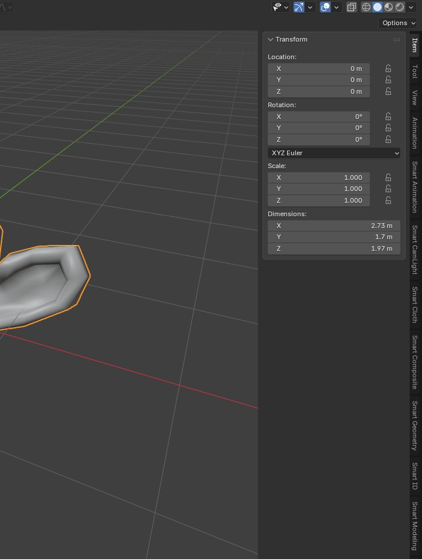
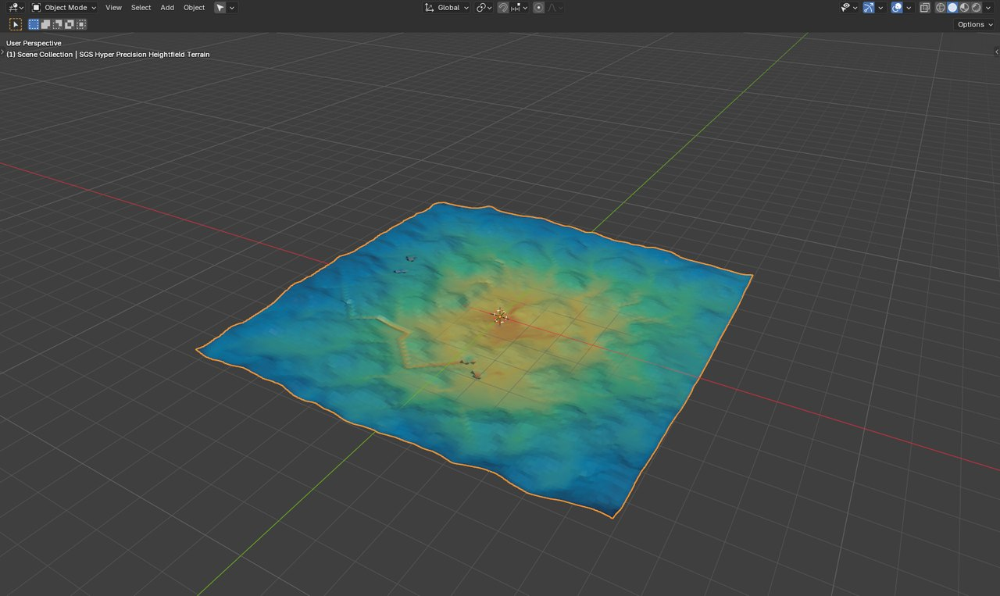
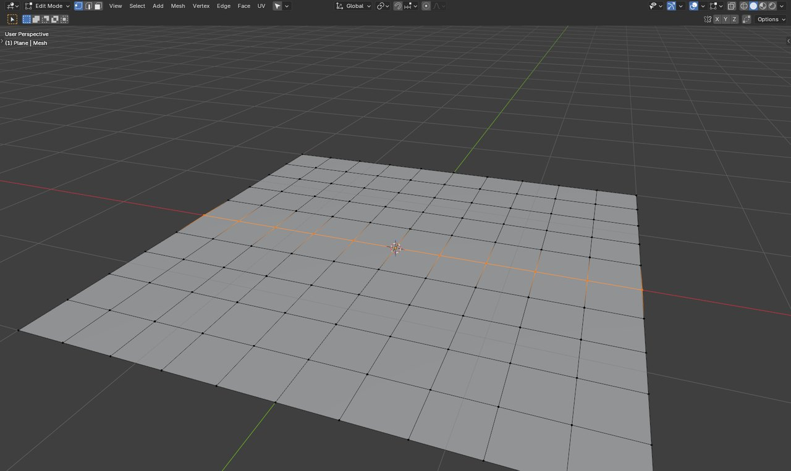
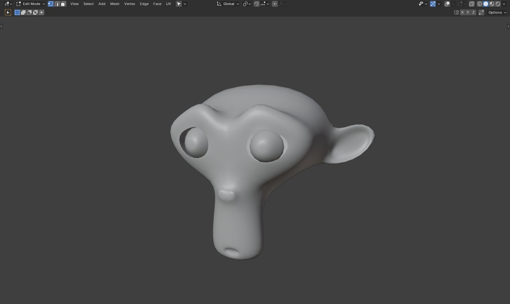
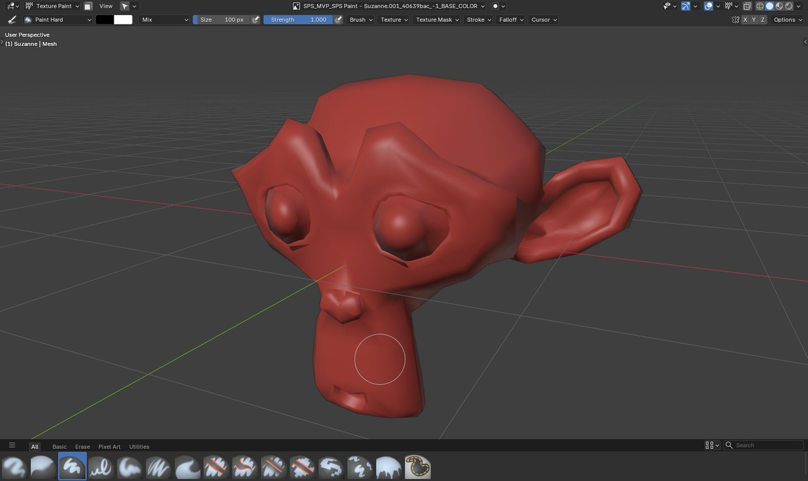
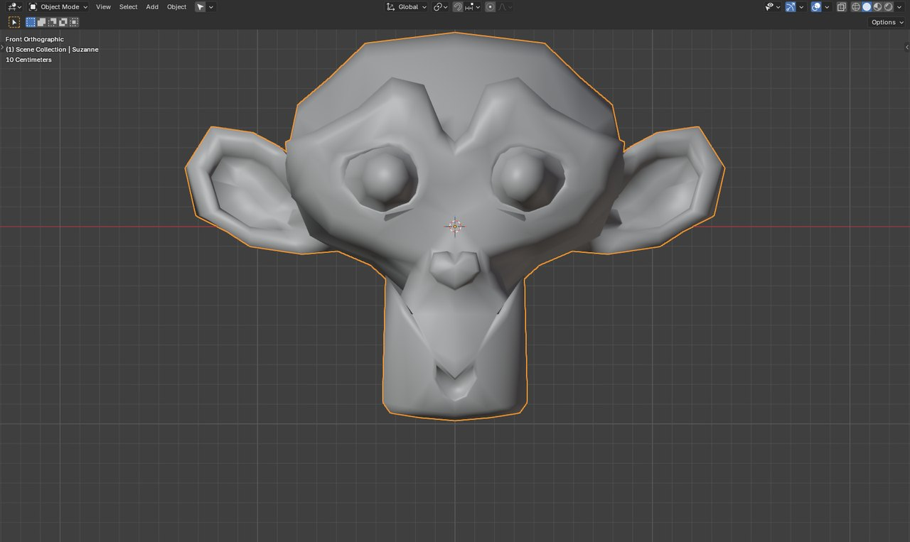
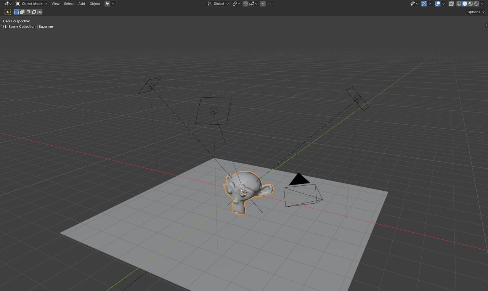
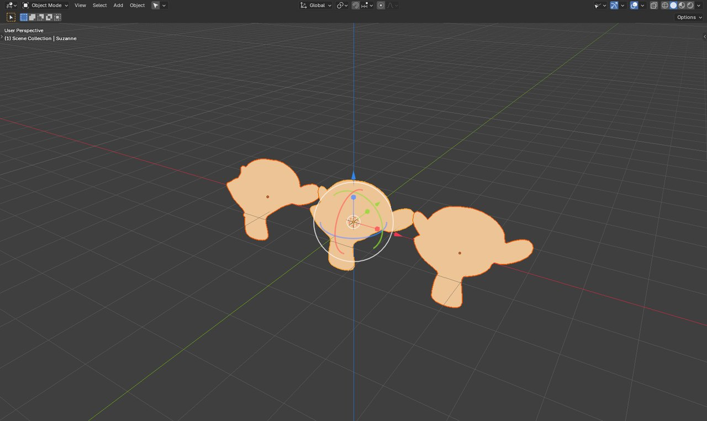
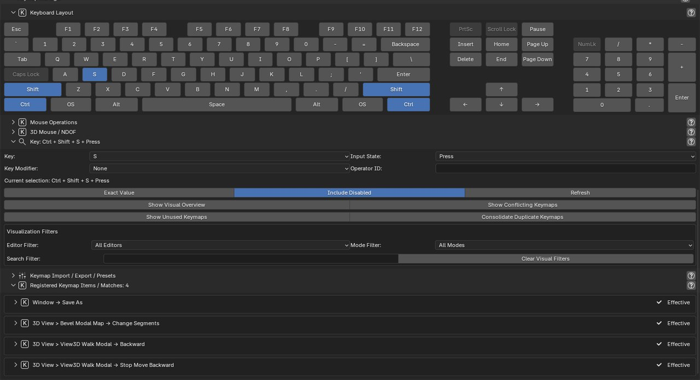

Smart Tools Manager
A tool for managing all of SmartTools. In one screen, you decide which Smart Tools panels appear for each combination of Workspace and Editor.
SmartTools
Version 1.0.0 / Blender 5.1.0 or later / 23 add-ons
A collection of 23 Blender add-ons that help with modeling, UVs, materials, painting, rigging, animation, camera work and interface management. Download a ZIP, install it in Blender, and use each add-on with its manual.
The add-ons are grouped into a tool that manages SmartTools as a whole, add-ons in 5 fields, and a bundled tool. Click an image or a name to open that add-on's manual. At the top of every manual there are links to the previous and next manuals, the PDF and the ZIP.
A tool for managing SmartTools as a whole. It lets you decide, on a single screen, which editors show the other add-ons’ panels (Overall Specification, Chapter 6).

A tool for managing all of SmartTools. In one screen, you decide which Smart Tools panels appear for each combination of Workspace and Editor.

A shape generation tool that creates terrain, scatter points, debris, fragments, branching curves, and basic shapes you can edit with numbers later, all with a click of a button.

An add-on that gathers modeling helper tools, including vertex editing, alignment, deletion, retopology, hard surface modeling, and generation, into a single Sidebar.

A tool for adding, reordering, toggling the display of, and editing intermediate stages of modifiers, all from the 3D Viewport Sidebar.

An add-on that gathers sculpting tools (for shaping forms like kneading clay) in the "Smart Sculpt" tab of the Sidebar, so you can refine shapes with brushes and filters even while staying in Mesh Edit Mode.

An add-on that bundles tools for setting an object's location, rotation, and size exactly with numbers, and for making click and drag operations easier to use.

A node tool that rearranges cluttered nodes into a readable layout with one button, and also merges and wires selected nodes, selects and frames nodes by following their connections, all from Sidebar buttons.

A paint add-on that lets you paint and save layered images, such as PSD files, layer by layer inside Blender.

An add-on that handles material creation, toon conversion, texture import, cleanup, and checking, all from a single tab in the Sidebar. A material is the set of settings that defines how an object looks.

An add-on that puts everything into a single "Smart UV" tab in the Sidebar: "Auto Seam", which decides seam positions automatically, plus unwrapping, symbol-button alignment, auto packing with 18 presets, and baking.

An add-on that gathers tools for easier keyframe work into a single Sidebar tab.

An add-on that handles cloth (fabric simulation) preparation, lightweight display, inspection, and safe baking for clothing, plus rigid bodies (Quick Rigid) and bone jiggle (Jiggle Physics), all in a single Sidebar tab.

A companion add-on that lines up the whole Auto-Rig Pro rigging process in one panel, in order, from preparation to baking secondary motion and checking the motion.

An add-on that builds your own button screens (selectors) in a browser window, so you can select Blender bones and move shape keys with a single click. It also includes layers that stack motion without breaking the base animation, and selection sets that remember selected objects by name.

An add-on that puts tools for creating, organizing, and animating Shape Keys, plus tools for baking facial captures, into a single Sidebar panel.

An add-on that brings camera and light management together in one Sidebar panel.

An add-on that adds node groups such as Glow and Bokeh to the Compositor (the node screen where you finish rendered images) with a single button.

An add-on that handles render preparation, output path checks, and batch rendering in a single panel.

A tool that brings importing files, checking links, exporting, review, and history and restore together in a single Sidebar panel.

An add-on that manages the IDs and channels you use in production (UV maps, attributes, groups, and more) in one list, so you can assign them to objects in bulk and inspect them.

An add-on that overlays easy-to-read colors for vertices, edges, and faces, display of hidden back sides, topology checks, the range of proportional editing, measurements, and more on the 3D Viewport.

A workspace tool that puts the Quick Launcher, which opens your frequently used Sidebar (N panel) tabs with a single popup button, together with tab renaming and reordering, lighter viewport display, and saved screen layouts in one tab.
A tool bundled with SmartTools.

A tool included with SmartTools. Look up shortcuts from a keyboard-shaped screen, then find and fix overlaps (conflicts).
Install the ZIP in Blender as it is, without extracting it (Installation).
| Add-on | File | Size | SHA-256 |
|---|---|---|---|
| Smart Tools Manager | SmartToolsManager_1.0.0.zip | 82 KB | 12e5861042e7290fcd9daf02ae804ceef22dd528750efccb6e5b06dad582e48e |
| SmartGeometry Suite | SmartGeometrySuite_1.0.0.zip | 675 KB | 60c39161ab3289e7fad0ad1caa8ad5701be99ee7af555f3fdf1aaed4b9e8da37 |
| SmartModeling Suite | SmartModelingSuite_1.0.0.zip | 3,050 KB | 81eb4f38e349e4fd21fba6a9ab8e328fc5d9a417ce2cdf364729009e6b5c5a5d |
| SmartModifier Suite | SmartModifierSuite_1.0.0.zip | 1,581 KB | 3f8e20074ec4c0a33863d529cb5173bb9ce49c6d4886ed8725311c79f8af7ece |
| SmartSculpt Suite | SmartSculptSuite_1.0.0.zip | 10,772 KB | 434e91f4c7f451c0122dbb8207fcb42185f4f080df6134410099986253bf9d11 |
| SmartTransform Suite | SmartTransformSuite_1.0.0.zip | 649 KB | a8bbd9238ee66a8158c3bc8d716ceed07309ac64031e77cca140a9970f41a8e4 |
| SmartNode Suite | SmartNodeSuite_1.0.0.zip | 397 KB | aa39560f853ad14778b580a1203a0acde1df30daca4c48366bfb01bcfe21a50e |
| SmartPaint Suite | SmartPaintSuite_1.0.0.zip | 955 KB | b5c476e021c77d40a963373c23a8403f945c948909b077b25b3975d55d0e0d89 |
| SmartShader Suite | SmartShaderSuite_1.0.0.zip | 11,417 KB | 7ffaccee892adeb7dd367ad83c6f002368c60a239ae5ce942014ca95eeb098ca |
| SmartUV Suite | SmartUVSuite_1.0.0.zip | 4,162 KB | a7987b8b853676763422609928b0ebe093d95b4b48a3b9db2aba54a92d920b5e |
| SmartAnimation Suite | SmartAnimationSuite_1.0.0.zip | 1,077 KB | 1434fcf9117fa1964fb0f6040e0dd928a206cea2f1527f629d1eb76e744a91bc |
| SmartCloth Suite | SmartClothSuite_1.0.0.zip | 264 KB | fae78235d76823f5c7a228ab4c571468e745f6b37ef26a7e7cedc2b29bbc9b32 |
| SmartRig Suite | SmartRigSuite_1.0.0.zip | 707 KB | 1282a5a9a442d8cff993bb7fbcc850bf5b59d6947eced5b91d7fc6fce3c68910 |
| SmartSelector Suite | SmartSelectorSuite_1.0.0.zip | 496 KB | 25f8dcd3c99040ef0f2fda8164a962cba36401aa725d58f2bca041fc9fd5e805 |
| SmartShapekey Suite | SmartShapekeySuite_1.0.0.zip | 4,147 KB | 35457e1460f2b2c4da38199558c3f557c6ccd95df8d16f9769a4d0fee15bf2d5 |
| SmartCamLight Suite | SmartCamLightSuite_1.0.0.zip | 116 KB | e8bad9b496f8776546fa7e3bd86ebeca931273d62b6d913d2e5307828b305c92 |
| SmartComposite Suite | SmartCompositeSuite_1.0.0.zip | 2,603 KB | 57955895854da95d050af65922b4b27ba0e9d266db7b87cccea96888b883b301 |
| SmartRender Suite | SmartRenderSuite_1.0.0.zip | 755 KB | b5b603d587bb45933e8a9795a58cbd6d3135b121aee89415053f84c569b7036a |
| SmartFile Suite | SmartFileSuite_1.0.0.zip | 4,761 KB | 16faa9e161134ea90b4af95d3db69df963df408fcf95a47c2366d34ea7fc9751 |
| SmartID Suite | SmartIDSuite_1.0.0.zip | 123 KB | a96f1ea871f8f3278cc5b2444137ba3d0dabcc8e6e1c0f47a7d55055f3567a71 |
| SmartOverlay Suite | SmartOverlaySuite_1.0.0.zip | 630 KB | ec4cf8b57a2e98c3d1f75ede6dcb68b61255ca61ece88291de4568a5fd4030a8 |
| SmartWorkspace Suite | SmartWorkspaceSuite_1.0.0.zip | 833 KB | c04e2a4176f47df9f597589e6cf59e95905df3f81a3d3ef31a487fd994f5dc08 |
| Keymap Manager | KeymapManager_1.0.0.zip | 50 KB | 2ed9d7811df9cea17300498f6d7e3d7580998bec2f640d1c897ef1e7c629d7c0 |
https://jelararagi.github.io/SmartTools/downloads/index.json (steps)